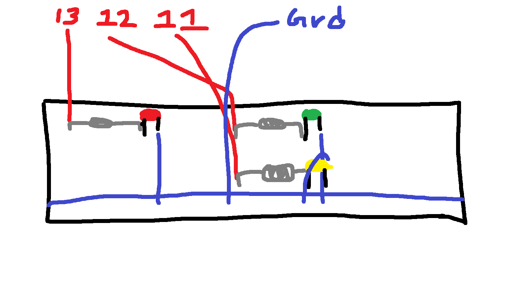
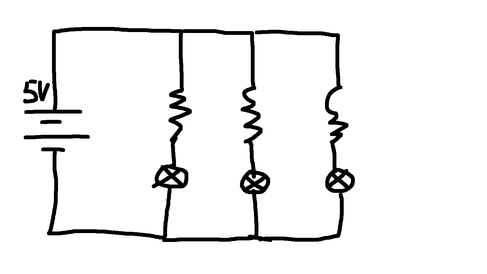

Here are the graphs representing this circuit
This represents my circuit
This represents my circuit schematic
// Time in miliseconds (1000 ms = 1 seconds)
int TIMEOUT = 1000;
// the setup function runs once when you press reset or power the board
void setup() {
// initialize all three used pins as output
// We are using Pins 13, 12, and 11, so we need to initialize all of them
for (int i = 13 ; i > 10 ; i--) {
pinMode(i, OUTPUT);
}
}
// the loop function runs over and over again forever
void loop() {
// The logic is relatively simple, in two parts, we want the LED start from 13 (Red)
// Make their way to green, then yellow, then back to green, then back to Red again
// To complete one of the cycle
// First part, goes from Red -> Green -> Yellow
// Red blink, then Green Blink, Then Yellow (We Turn Yellow On)
for (int i = 13 ; i > 10 ; i--) { // Start from Pin 13 and goes to Pin 11
if (i > 11) { // Red and Green
digitalWrite(i, HIGH);
delay(TIMEOUT - 250 );
digitalWrite(i, LOW);
delay(TIMEOUT - 750);
} else { // Yellow
digitalWrite(i, HIGH);
delay(TIMEOUT - 250);
}
}
// We move to this part of the loop after 250ms and reverse the direction, this time
// going back up instead.
for (int i = 11 ; i < 14 ; i++) {
if (i > 11) { // Red and Green
digitalWrite(i, HIGH);
delay(TIMEOUT - 250 );
digitalWrite(i, LOW);
delay(TIMEOUT - 750);
} else { // Yellow
digitalWrite(i, LOW);
delay(TIMEOUT - 750);
}
}
}
Here is the code for this project with commenting!
Here are some additional Questions: